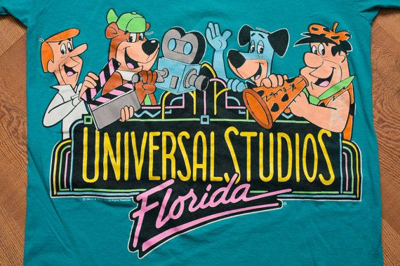
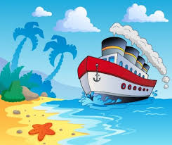

Theory11

The Theory11 website provies good example of "Visual hierarchy." The the arrangment of the photos and the alignment of text provides the user the ability to observe the site and see many different types of playing cards. On a final not, theory11 does an amazing job with just a simple color way. I provided two other links for fun. I have a weird passion for playing cards.
Universal Studios

The amazing Unversal Studios. THe rides, the atmosphere, the jokes.. The website for this magical place has great qualities of use white spacing. Spacing is sometimes good for site, because it makes it to read the details that the company wants you to read. Whitespacing is also provides simplicty for mobile users which is very important these days.black

Viking Cruises

The Viking Cruise website provides good examples for Hicks law. We all know when it comes to buying something, it can take tons of thinking because we want to choose the best option. The viking cruise make its very simple for the customer to decide on a cruise, and choosing and appropriate date. I think this website also provides the mobile to computer experience which has a huge impact on in any business. Personally if you want to go on any cruise, carnvial wont disappoint. Viking is more expensive but Carvival provides a good experience at an amazing price.
